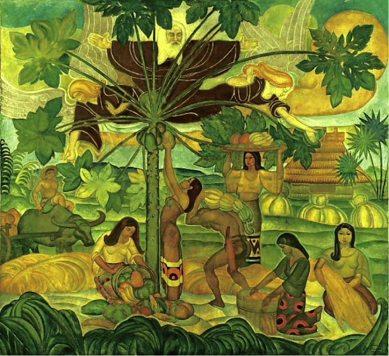

by Richard McKinley")
the expression of ideas and emotions, with the creation of certain aesthetic qualities, in a two-dimensional visual language.
The elements of this language—its shapes, lines, colours, tones, and textures—are used in various ways to produce sensations of volume, space, movement, and light on a flat surface. These elements are combined into expressive patterns in order to represent real or supernatural phenomena, to interpret a narrative theme, or to create wholly abstract visual relationships.
An artist’s decision to use a particular medium, such as tempera, fresco, oil, acrylic, watercolour or other water-based paints, ink, gouache, encaustic, or casein, as well as the choice of a particular form, such as mural, easel, panel, miniature, manuscript illumination, scroll, screen or fan, panorama, or any of a variety of modern forms, is based on the sensuous qualities and the expressive possibilities and limitations of those options. The choices of the medium and the form, as well as the artist’s own technique, combine to realize a unique visual image. Read more here...
Sometimes it’s impossible to communicate the depth of our emotions. All we can do is allow our emotions to flow through painting.
Since prehistoric times, humans have manifested the desire to express emotion and thought through artistic forms. Often this is done solely for personal enjoyment, but frequently it serves a bigger purpose by communicating personal feelings to other human beings. This desire to be heard, and hopefully understood, has led to the formation of language, the invention of a written alphabet, the arrangement of sound into music, and the placement of pigment upon a painting surface.
When our artistic efforts are to be publicly displayed, we need craftsmanship and technical mastery of the individual medium; otherwise, we’ll fail to communicate. Since all of us are the sum total of our experiences and no two of us see and hear things in quite the same way, our artistic expressions will either be cheered or jeered depending upon the audience. This leads most artists to pursue study and practice throughout their artistic lifetime. Read more here...

Felix Resurreccion Hidalgo is regarded as one of the great Filipino painters of the late 19th century. Based on Dante Alighieri’s 14th century epic poem Inferno, La Laguna Estigia, also known as The River Styx or simply The Styx, is a Greco-Roman painting. Inferno is a poem about journey through hell, where hell is depicted as having nine concentric circles which represent the different levels of sins and wickedness. The fifth circle of Hell, which is known as Wrath, is located in the stinking water of the river Styx. In this painting, Hidalgo portrays a darker and more mysterious interpretation of Dante’s poem. The painting was made in a set of two, the other companion piece being La barca de Aqueronte. It was a silver medalist during the General Exhibition of the Philippines in Madrid in 1887.

The uprising of the everyday FIlipino and the downfall of the dictatorship as a result of the EDSA People Power Revolution in 1986 are two significant events that altered the path of Philippine history. Benedicto Cabrera or BenCab was working amid the uproar. Through his controversial piece of art titled “Yellow Confetti,” he managed to embody the civic resistance of Filipinos at the time. The painting portrays the anger felt by Filipino protesters at the time, as well as the unity of the common Filipino, uniting together to fight for a common cause.

Juanito Torres, a modern Filipino artist, is responsible for creating another staple of Philippine art, called “The Gathering of Heroes.” It is said that the composition of this iconic piece mirrored the structure of an X-Men comic book cover. The painting though, is packed with heroes who have lived and died for the country. The painting features Andres Bonifacio, Melchora Aquino, Jose Rizal, Antonio Luna, Emilio Jacinto, Emilio Aguinaldo. Many of those figures were instrumental in the Philippine revolutionary movement of the 19th century.

“Las Damas Romanas”, painted by Juan Luna in the style of the Neo-Classicism, is one of the most famous paintings of the Colonial period. Skilled in the style of the Academy he was the first Filipino painter to win international recognition in Europe and the US.

History names Victorio Edades as “the father” of Modern Philippine art. Schooled in the US upon his return he introduced an entirely new way of thinking about art. He argued that art can be more than representation of reality, it can be representation of reality as seen through the mind and emotions of the artist.